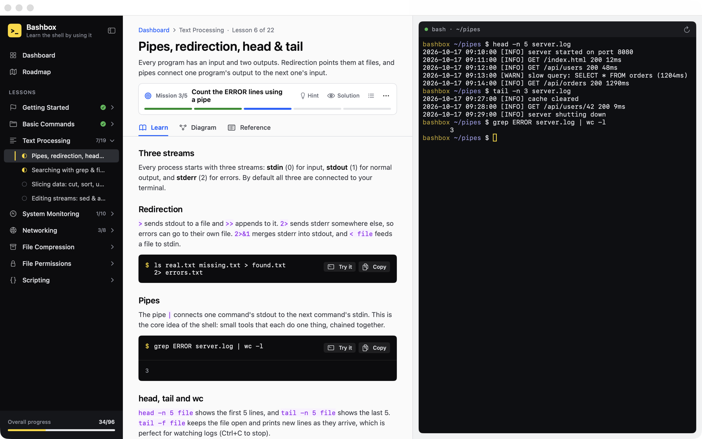
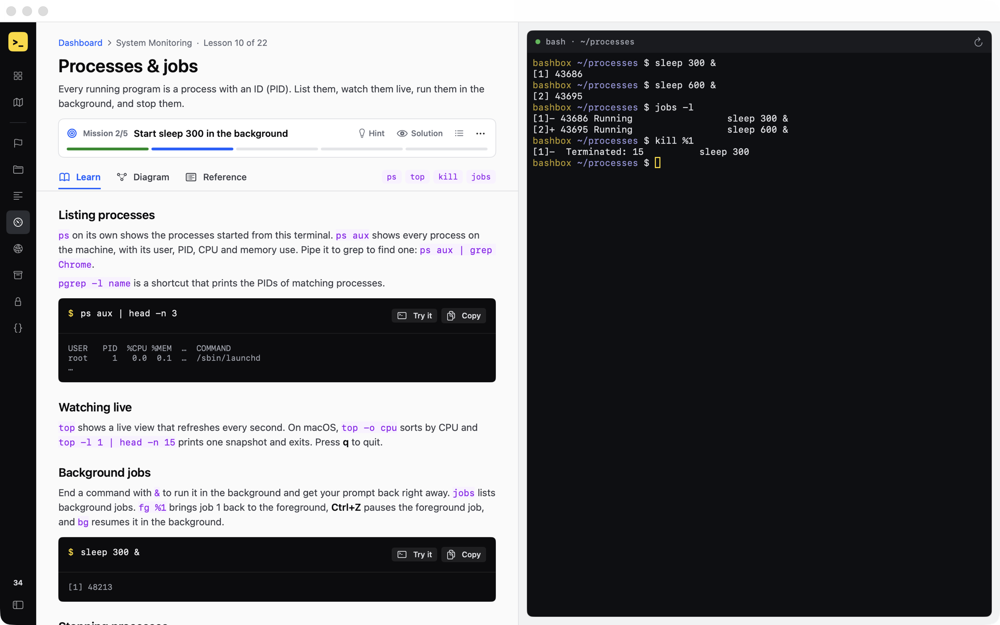
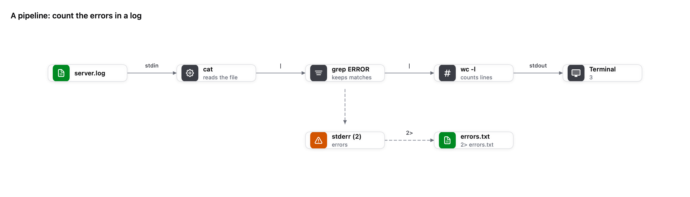
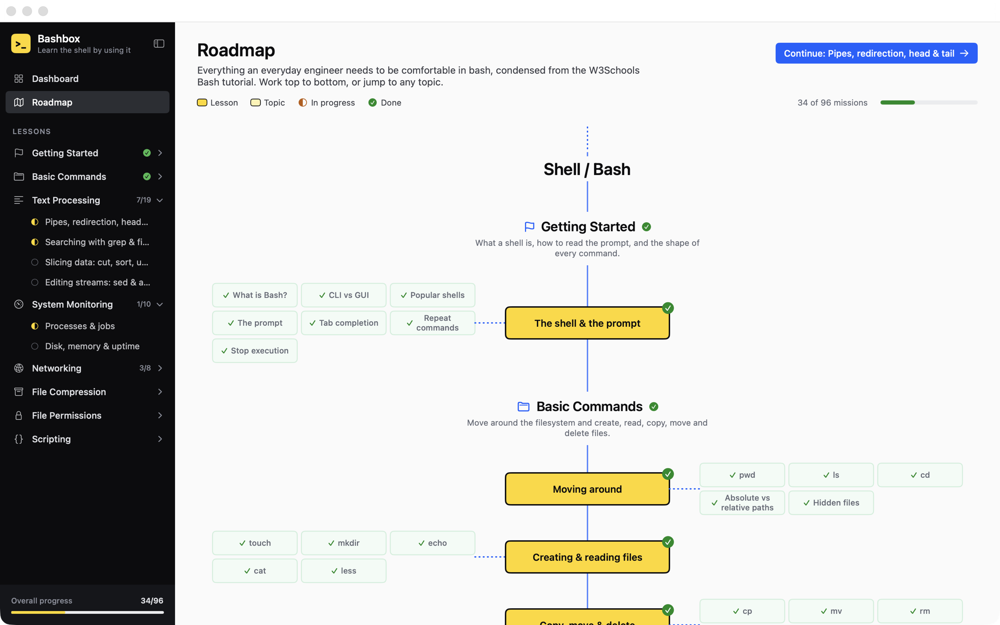
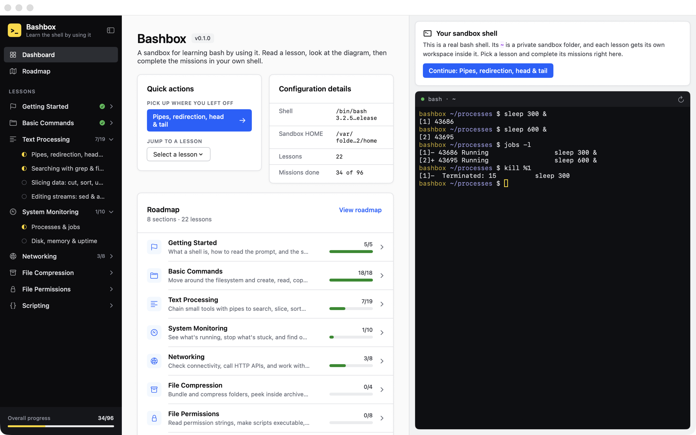

Learn bash by using it.
Bashbox is a Mac app with a real bash shell built in. Read a short lesson, then complete missions in the terminal right beside it. Bashbox checks your work as you type.
Universal app for Apple silicon and Intel · macOS 14 Sonoma or later

Read a little, type a lot.
Every lesson follows the same loop, so you spend your time in the shell instead of reading about it.
Read the lesson
Short explanations with real examples. Hit Try it on any example and Bashbox types it into the terminal for you.
Run it yourself
The shell next to the lesson is real bash. Each lesson gets its own folder with practice files already in it, like logs, CSVs and scripts.
Clear the missions
Bashbox watches what you run and the files you change, and ticks off each mission when you get it right. Hints and solutions are there if you're stuck.
Everything you need, nothing in the way.
Your progress is checked as you type.
The mission bar shows the one task you're on, with a progress bar for the lesson. No quizzes or multiple choice: you pass by running the command or making the file.
- Hints and full solutions stay hidden until you ask for them
- Collapse the sidebar for a focused, two-pane view
- Progress is saved, so you can pick up where you left off

See what's happening under the hood.
Every lesson has a diagram of the mechanism behind the commands: how a pipe connects processes, where stderr goes, what SSH does with your keys.
- 22 diagrams, one per lesson
- A quick reference table of the options you'll actually use
- macOS notes wherever BSD tools differ from GNU/Linux

A clear path from first prompt to cron jobs.
The roadmap lays out every lesson and topic in order, with what you've finished marked off. Work top to bottom, or jump to whatever you need today.

Always know what's next.
The dashboard shows your progress through each topic and takes you straight back into the lesson you were working on.

Built for practice.
A real shell
Not a simulator. It's your Mac's own /bin/bash, so everything you learn works the same in Terminal.
Its own home folder
The shell starts in a separate practice folder, with one workspace per lesson, so your own files stay out of the way.
Reset any lesson
Broke something? One click restores the lesson's starting files and clears its missions so you can go again.
Try it buttons
Examples type themselves into the prompt without pressing Return, so you can read and tweak them first.
Private and offline
No account, no tracking, no network needed. Your progress lives on your Mac.
Keyboard friendly
⌘ [ and ⌘ ] move between lessons, and ⌘ \ hides the sidebar.
The bash every engineer uses.
Eight topics, ordered so each one builds on the last. Based on the everyday material from the W3Schools Bash tutorial.
Getting Started
What a shell is, how to read the prompt, and the shape of every command.
Basic Commands
Move around the filesystem and create, read, copy, move and delete files.
Text Processing
Chain small tools with pipes to search, slice, sort and rewrite text.
System Monitoring
See what's running, stop what's stuck, and find out where your disk and memory went.
Networking
Check connectivity, call HTTP APIs, and work with remote machines over SSH.
File Compression
Bundle and compress folders, peek inside archives, and extract them.
File Permissions
Read permission strings, make scripts executable, and control who owns what.
Scripting
Turn commands you repeat into scripts with variables, conditions, loops and functions, then schedule them.
Up and running in a minute.
Bashbox comes as a standard Mac disk image (DMG).
-
Download the DMG
Get Bashbox.dmg from the latest GitHub release. It's one universal download for Apple silicon and Intel Macs.
-
Open it and drag Bashbox to Applications
Double-click Bashbox.dmg in your Downloads folder. In the window that opens, drag the Bashbox icon onto the Applications folder.
-
Eject the disk image
In Finder's sidebar, click the eject button next to Bashbox. You can then delete the DMG.
-
Open Bashbox
Launch it from Applications, Launchpad or Spotlight (⌘ Space, then type “Bashbox”). The first launch needs one extra step; see below.
If macOS says Bashbox can't be opened. Bashbox is free and isn't notarized by Apple, so the first launch is blocked by Gatekeeper. To allow it:
macOS 15 Sequoia and later: open Bashbox once and click Done. Then go to System Settings → Privacy & Security, scroll down to the message about Bashbox, click Open Anyway, and confirm with your password.
macOS 14 Sonoma: in Applications, Control-click Bashbox, choose Open, then click Open again.
You only need to do this once.
Requirements
- macOS14 Sonoma or later
- MacApple silicon or Intel
- DownloadAbout 5 MB
- ShellBuilt-in /bin/bash
Prefer the Terminal?
Clear the quarantine flag after copying the app to Applications:
xattr -dr com.apple.quarantine /Applications/Bashbox.appBuild from source
Needs Xcode 16 or the Swift 6 toolchain.
git clone https://github.com/mmerioles/bashbox.git
cd bashbox
swift runTo make your own DMG, run scripts/build-dmg.sh.
Uninstall
Drag Bashbox from Applications to the Trash. To also remove your practice files and progress:
rm -rf ~/Library/Application\ Support/Bashbox
defaults delete io.github.mmerioles.bashboxOpen a shell and start typing.
Free, open source, and ready in a minute.